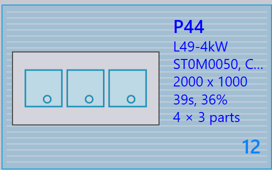

Pannello layout
Questa sezione illustra le azioni relative al layout come Send to machine, Recall from machine, Export outputs, Mark complete, Add parts…, Adapt/Compact…, Split layout e altre opzioni utilizzate per gestire le istanze del layout.

|
|
Send to machine
-
Quando un nest è pronto (completo o necessario con urgenza), è possibile inviarlo alla macchina.
-
Fare clic con il pulsante destro del mouse sul nest e selezionare Send to machine….
-
Viene creata automaticamente una cartella, denominata come il nest.
-
I file di output (fxlyt, NC, report, csv) vengono esportati nella posizione di output del lavoro.
-
I nest inviati alla macchina sono mostrati con un segno di spunta blu.
| Una volta rilasciati, tali nest non vengono più riproposti per la riorganizzazione. |
Recall from machine
-
Se l’output necessita di validazione o di un aggiornamento (ad esempio, l’aggiunta di altri componenti):
-
Fare clic con il pulsante destro del mouse sul layout esportato.
-
Selezionare Recall from machine….
-
-
I file di output e la cartella (fxlyt, NC, report, csv) vengono eliminati.
-
Il nest diventa nuovamente modificabile.
-
È possibile apportare modifiche e inviarlo nuovamente alla macchina.
Export outputs
-
Fare clic con il pulsante destro del mouse su un layout (nest) che è stato inviato alla macchina e fare clic su Export outputs.
-
L’opzione Export Outputs esporta i file NC, Report e Layout nelle rispettive cartelle di output della macchina.
-
Questa opzione rigenera il file NC con le impostazioni delle unità correnti per il layout.
| Export Outputs non è disponibile per i layout completati e per i layout in attesa nella coda di riorganizzazione. |
Contrassegna come completato
-
Una volta elaborato il nest sulla macchina, fare clic con il pulsante destro del mouse sul nest e selezionare Mark complete….
-
È possibile selezionare più nest e contrassegnarli come completati contemporaneamente.
-
Quando un nest viene contrassegnato come completato:
-
Viene disattivato, spostato alla fine dell’elenco e mostrato con un segno di spunta verde.
-
Il layout viene rimosso dall’elenco dei layout attivi.
-
Gli stati del componente e del lavoro vengono aggiornati e le quantità elaborate passano allo stato completato.
-
I file di output di quel layout vengono rimossi dalla posizione di output della macchina per evitarne l’uso duplicato.
-
Add parts…

-
Utilizzare questa opzione per aggiungere altri componenti a un layout relativamente mal organizzato. Come il nesting interattivo, questa è un’opzione guidata da una procedura e può essere utilizzata su uno o più layout contemporaneamente.
-
TruSmartCAM monta la procedura guidata di riorganizzazione del layout nell’area di lavoro principale quando si utilizza questa opzione. Tenere premuto il tasto Ctrl e selezionare uno o più componenti da collocare sul layout e premere Next.

-
I componenti selezionati vengono visualizzati nel passaggio successivo con una colonna della quantità modificabile. Aggiornare le quantità dei componenti, se necessario, nel campo Update Qty. Fare clic su Next per procedere al nesting. Si noti che le quantità possono essere solo aumentate, non ridotte.
-
Tutti i layout vengono annidati separatamente e i risultati del nesting vengono visualizzati con i componenti appena collocati su di essi. Selezionando il layout vengono visualizzati tutti i componenti esistenti del layout. Il risultato viene scartato automaticamente se durante la riorganizzazione non viene collocato alcun nuovo componente. Un layout con più copie può dare origine a schemi diversi dopo la riorganizzazione.
Adapt/Compact…
-
Questo comando basato su procedura guidata può essere utilizzato per adattare un layout da una macchina a un’altra quando la macchina originale è ferma o quando è necessario bilanciare il carico di lavoro delle macchine.

-
Può essere utilizzato quando la lamiera pianificata è esaurita e il layout deve essere ripianificato su un’altra lamiera disponibile.
-
È possibile unire layout organizzati su lamiere più piccole su lamiere più grandi per utilizzare il materiale in modo più efficiente.
-
È possibile suddividere layout organizzati su lamiere più grandi in lamiere più piccole se non sono disponibili scorte di lamiere grandi.
-
È possibile migliorare l’efficienza di packing di più layout (anche di macchine diverse) unendoli insieme.
-
Per utilizzarlo, selezionare uno o più layout e fare clic su Adapt/Compact… per aprire la procedura guidata nell’area di lavoro.

-
Il riquadro di sinistra mostra tutti i layout selezionati e il riquadro Componenti mostra i componenti del layout.
-
Selezionare la macchina di destinazione e il materiale della lamiera, quindi fare clic su next per eseguire il nuovo nesting.
-
I nuovi risultati del nest vengono mostrati nel riquadro dei risultati.
-
Fare clic su next per salvare il layout adattato o compattato.

Suddivisione di un layout
L’opzione Split layouts… consente di suddividere un layout esistente in più layout modificando le quantità, senza dover rifare l’attrezzaggio o il nesting.
Questa funzionalità è particolarmente utile nei seguenti scenari:
-
Quando è necessario produrre immediatamente una parte della quantità totale pianificando la quantità rimanente per una produzione successiva.
-
Quando i requisiti di produzione devono essere distribuiti su più turni o giorni per ottimizzare il flusso di lavoro e l’utilizzo delle risorse.
-
Quando una macchina specifica è temporaneamente non disponibile o occupata ed è necessario adattare il layout per soddisfare i vincoli di produzione correnti.
Per suddividere un layout, eseguire i passaggi seguenti:
-
Nella vista Layout, selezionare il layout desiderato.

-
Fare clic su Split layouts….
-
Immettere il valore desiderato in New Copies.

-
Fare clic su OK.

Il layout selezionato viene ora suddiviso in due layout con quantità adattate.